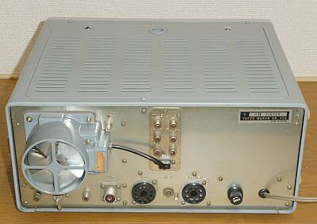
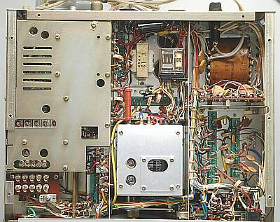
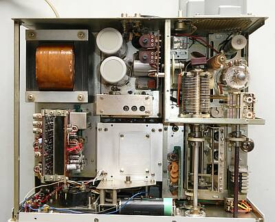
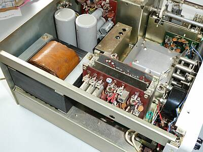
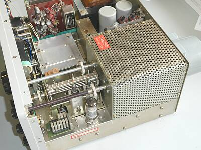
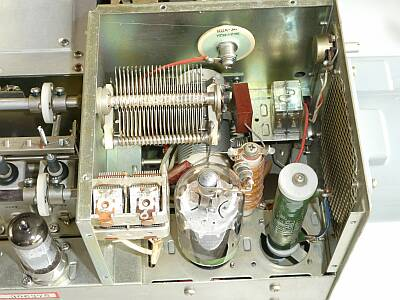

 |
こちらは、リアパネルの様子です
本機は１０W機ですが、オプション（多分）のファンが実装されています
シンプルなリアパネルです |
 |
こちらが、下（底面）の様子です
シールド板に囲われていてるところはＲＦ部（局発、第二ミキサ、ドライバ）
見た目、ＦＴ-１０１とニアリー・イコールです
|
 |
シャーシ上面を撮したものです
ファイナル部は、シールド板を取り外しています
ＲＦ同調は、１０１シリーズ共通のμ同調機構の採用です
|
 |
シャーシ上面を角度を変えて撮したものです
ＶＦＯ部の上には、オプションのＲＦスピーチプロセッサーが取付できるように空間が空いていますが、その取付作業は配線の追加など結構大変そうです |
 |
シャーシ上面を角度を変えて撮したものです
ファイナル部はシールドを取り付けた本来の状態です |
 |
ファイナル部のアップ
本機は１０W機ですから、真空管は６ＪＳ６Ｃ １本
もう１本の変わり（ヒーターの代替）をする３Ω３０Ｗの抵抗器がセットされています
ロード側のＶＣですが、小ぶりなものが採用されいます |
|
本機は、初期モデルの後期（ボタンＳＷが四角から丸になった直後）ではないかと思います
相方の、ＦR-１０１とは別のタイミングで入手したものですが、非常に良い保存状態のものでした |